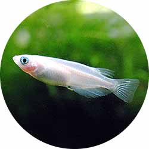

メダカはとても丈夫で飼いやすい魚なので、屋外と室内どちらでも飼育することができます。メダカを飼う目的によって、飼育方法を変えてみるのも良いでしょう。繁殖させたい場合は屋外、観賞したい場合は室内での飼育がおすすめです。冬のメダカはあまり動きませんが、室内で水槽を保温することで、冬場でも産卵を楽しむことができます。

メダカについて
日本で最小の淡水魚がメダカです。メダカはきれいな田園や小川に棲み、古くから日本人に親しまれてきました。屋外でも屋内でも飼うことができ条件が揃えば簡単に卵を産ませることができるなど、比較的育てやすく楽しい魚なので、観賞魚飼育がはじめての方にもおすすめです。
屋外と室内での飼育の方法について

メダカは元々丈夫な魚ですので水が漏れない容器と水。それとメダカの隠れ場所になるような流木や水草などとエサがあればメダカを飼うことができます。屋内でも屋外でも飼育は可能ですが、ここでは水槽を使って屋内で飼育する方法をご説明します。一般にメダカの寿命は1～2年と言われていますが、人工的な飼育下では長いものでは、4～5年生きる個体もあるようです。
メダカを飼う時の環境
飼育には適正な水槽の大きさが必要です。
飼育容器とはメダカの住まいとなる水槽です。飼育匹数により大きさを決めてください。メダカ1匹に対して水槽の容積が1リットルを目安に水槽選びをします。数匹なら金魚・メダカ鉢で飼育できます。

飼育に適切な水槽内のレイアウト
メダカは田んぼや小川に住んでいる魚ですので、泥底を本来は好みますが泥にかぎらず砂や砂利などでも問題はありません。ただ、メダカはおどろいた時などに川床に潜り込む習慣がありますので、細かいものを選んだほうがメダカのためにはいいのかもしれません。市販されている赤玉土や大磯砂、川砂などでも可能ですが、空き地や河原から取ってきた場合は、枯れ草などのゴミが混ざっていますのでよく洗った後、底に約1 センチほどの厚さで水槽に入れます。
水草は酸素の補給と卵を産みつける場所、それから水槽内の余分な栄養分（汚れ）の分解者としてバクテリアが棲む場所でもありますのでできれば水草がある方がメダカにとっていい環境だといえるでしょう。
飼育に適切な水槽内の水流
メダカが本来好んですむ場所は、小川や池、田んぼなどの水流のあまりないところなので、メダカの泳ぐスピードは決して速くありません。また瞬間的には素早い動きをすることがあっても、長時間その動きを継続することはありません。 このことからメダカが生活するための第一の条件としては、水流が弱いことがあげられます。水槽でメダカを飼う場合にも大きなフィルターやエアレーションなどによって水流が強くなりすぎると、メダカには過大なストレスがかかることになるので注意が必要です。
メダカ飼育に大事な水の管理
水 質
メダカを上手に育てるコツは水質管理です。水が良ければ病気になりにくく大きく育ってくれます。メダカは弱酸性から弱アルカリ性くらいの水を好みます。水をアルカリ性に変えてしまう砂（サンゴ砂等）もあるので注意しましょう。水道の水はほぼ中性なので使えます。ただし消毒の為の塩素がメダカにとって猛毒なのでこれだけは取り除きます（カルキ抜き）。塩素の中和にはショップ等で販売している「塩素中和剤（カルキ抜き）」を使用するか、もしくはバケツに水を汲んで外に出し2～3日おくなどすればほとんど塩素は抜けます。
バクテリアの繁殖
しかし、塩素が抜けたからといってメダカにとって良い水かといえばそうではありません。この状態は「新水」といい、メダカにとって大切なバクテリアやプランクトンがほとんどいません。一週間くらい経つと水がなれてきて「古水」になります。この状態になるまではエサを控えて水が汚れないようにしましょう。もしすぐに「いい水」にしたいのなら市販のバクテリア繁殖促進剤を入れるといいでしょう。
水の量
メダカの数によって最低限必要な水の量が決まってきます。目安として、最低メダカ1匹に対して水1リットル、理想としてメダカ1匹に対して水2～3リットルです。エアレーションなどをすることによってこれ以上でも飼うこともできますが、なわばりを持ったりした時にあまりメダカが多いとストレスになる場合があります
水 温
メダカが最も活発に活動する水温は23℃です。この水温範囲に飼育水が保たれていれば、エサ食いも良く、成長も早いものです。メダカを早く大きくしたいときには、水温を高めに設定します。しかしあまり水温が高すぎると、食欲が落ちてきます。（水温が高すぎる）真夏に繁殖行動が鈍ってくるのはそのためといえます。メダカにとって、一日の水温変化の幅が大きいとストレスになりますので、最低温度を一定に保つようなヒーターの使用は病気の発生を防ぐ意味でかなりの効果があります。また、水温が低くなるとメダカは冬眠します。
エサについて
メダカのエサは、粒状、パウダー状などがあります。メダカの成長に合わせて1日2回（朝と夕方）くらいで食べきれる量を与えましょう。
エサの種類
メダカのエサは水面にしばらく浮いている物がいいので、フレーク状のものがオススメです。栄養のバランスもよく、すぐには腐らないので、水を汚しにくいという利点があります。メダカは小さな魚ですので、メダカ専用のエサを使用するか、または指先などで細かくすりつぶして食べやすくしてあげます。稚魚についても、エサをさらに細かくすりつぶしてパウダー状にしたもので可能です。市販品以外なら、ボウフラやイトミミズ・ミジンコ・アカムシなどが簡単に手に入るのであれば、残さない程度の量を入れてあげるといいでしょう。
エサの回数
エサは1日2回（朝方と夕方）くらいで、食べきれる量をあげましょう。目安としては、メダカ10匹に対しひとつまみ程度のエサをあげましょう。メダカは気温が下がると冬眠します。冬場は、暖かい部屋の中では冬眠しませんので、浮き草や藻などがあれば一週間に一度ぐらい、屋外なら1ヵ月に一度ぐらい。冬眠中なら与えなくても大丈夫です。食べきれなかったエサが水底に沈むようなことがないようにしましょう。エサを与えすぎてメダカを死なせてしまうことはけっこうありますが、エサの量が少なくてメダカが死んでしまうことは、あまりありません。与えすぎると食べ残しが腐敗し水質悪化につながりメダカは弱ってしまいますので気を付けてください。